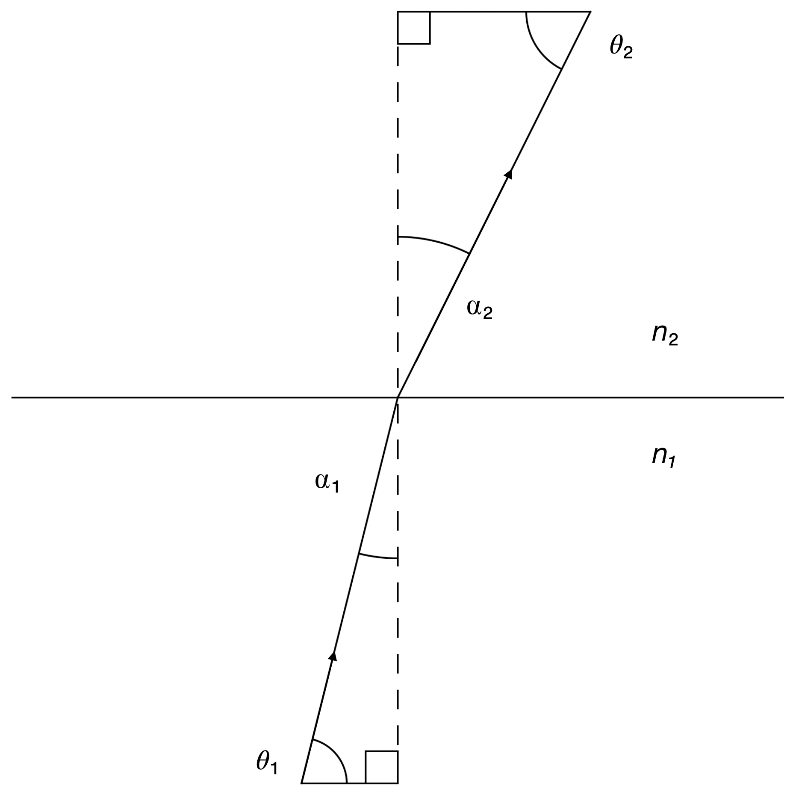

We wish to derive the equation that represents the path taken by a light ray through a plasma with an electron density and refractive index that varies with $y$.
First, we start with Snell's Law:
$n_1\sin\alpha_1 = n_2\sin\alpha_2$,
with the symbols defined as shown in the image.
We can rewrite this in terms of $\theta$ as
$n_1\cos\theta_1 = n_2\cos\theta_2$,
and then rearrange it to get
$n_1\cos\theta_1 - n_2\cos\theta_2 = 0$.
We can rewrite the LHS of the above equation as the change in $n\cos\theta$, as follows:
$\delta(n\cos\theta) = 0$.
Note that $n$ = $n(y)$.
If the change in $n\cos\theta$ is zero, then its value is constant, which we can call $C$.
\begin{align} n(y)\cos\theta &= C\\ & = n(y_0)\cos\theta_0,\\ \end{align}
where $y_0$ and $\theta_0$ are the initial values of $y$ and $\theta$.
Rearranging this equation, it is trivial to see that
$n(y) = C\sec\theta$,
and therefore
\begin{align} \frac{dn}{d\theta}& = \frac{d}{d\theta}(C\sec\theta)\\ & = C\frac{d}{d\theta}(\sec\theta)\\ & = C\sec\theta\tan\theta\\ & = n(y)tan\theta.\\ \end{align}
This can be rewritten as
$\frac{d\theta}{dn} = \frac{1}{n\tan\theta}$.
Using the fact that the gradient can be written as $\frac{dy}{dx} = \tan\theta$, we can write
\begin{align} \frac{d^2y}{dx^2} & = \frac{d}{dx}(\tan\theta)\\ & = \frac{d}{dx}(\frac{1}{n}\frac{dn}{d\theta})\\ & = \frac{d}{dx}\bigg(\frac{1}{n}\bigg)\frac{dn}{d\theta} + \frac{1}{n}\frac{d}{dx}\bigg(\frac{dn}{d\theta}\bigg).\\ \end{align}
Since $n$ is a function of $y$ only, this becomes
$\frac{d^2y}{dx^2} = \frac{1}{n}\frac{d}{dx}\Big(\frac{dn}{d\theta}\Big)$,
which, with the help of the chain rule, becomes
\begin{align} \frac{d^2y}{dx^2} & = \frac{1}{n}\frac{d}{dx}\bigg(\frac{dn}{dy}\frac{dy}{d\theta}\bigg)\\ & = \frac{1}{n}\frac{dn}{dy}\frac{d}{dx}\bigg(\frac{dy}{dx}\bigg).\\ \end{align}
Since $\frac{dy}{dx} = \tan\theta$, it follows that
$y = x\tan\theta + k$,
and therefore
$\frac{dy}{d\theta} = x\sec^2\theta$.
We can now write
\begin{align}\frac{d^2y}{dx^2} & = \frac{1}{n}\frac{dn}{dy}\frac{d}{dx}\big(x\sec^2\theta\big)\\ & = \frac{1}{n}\frac{dn}{dy}\sec^2\theta.\\ \end{align}
Using Snell's Law again, we know that $\sec\theta = \frac{n}{C}$, so
$\frac{d^2y}{dx^2} = \frac{1}{n}\frac{dn}{dy}\frac{n^2}{C^2}$
$\frac{d^2y}{dx^2} = \frac{n}{C^2}\frac{dn}{dy}$
But what is $n$ for a plasma? We must use the result:
$k = \frac{\omega}{c}\Big(1 - \frac{\omega_p^2}{\omega^2}\Big)^{\frac{1}{2}}$
The definition of a refractive index $n$ is $k = \frac{\omega}{c}n$, so
$n = \Big(1 - \frac{\omega_p^2}{\omega^2}\Big)^{\frac{1}{2}}$.
Given that $\omega_p^2 = \frac{N_ee^2}{m_e\varepsilon_0}$, we can impose a spatial gradient on the free electron density:
Let $N_e = \gamma y$
Now,
$n = \Big(1 - \frac{e^2\gamma y}{m_e\varepsilon_0\omega^2}\Big)^{\frac{1}{2}}$.
We can take the derivative of this with respect to $y$:
$\frac{dn}{dy} = -\frac{1}{2}\Big(1 - \frac{e^2\gamma y}{m_e \varepsilon_0 \omega^2}\Big)^{\frac{1}{2}}\frac{e^2}{m_e\varepsilon_0 \omega^2}$
Multiplying $n$ and $\frac{dn}{dy}$ together gives
$n\frac{dn}{dy} = -\frac{e^2 \gamma}{2m_e \varepsilon_0 \omega^2}$
So, using an earlier result for $\frac{d^2y}{dx^2}$, we can now write
$\frac{d^2y}{dx^2} = \frac{e^2\gamma}{2m_e \varepsilon_0 (C \omega)^2}$
$\frac{d^2y}{dx^2} = \frac{e^2}{2m_e \varepsilon_0}\frac{\gamma}{(\omega n(y_0)\cos\theta_0)^2}$
This is a constant! So we know that the equation for $y$ must be
$y(x) = \frac{e^2}{2m_e \varepsilon_0}\frac{\gamma}{(\omega n(y_0)\cos\theta_0)^2}x^2 + k_1x + k_2$.
$\frac{dy}{dx}\Big|_{x = 0} = \tan\theta$, so $k_1 = \tan\theta$.
We can also set the coordinate origin position such that $y(0) = 0$, meaning that $k_2 = 0$, so we get the final result:
$y(x) = \frac{e^2}{2m_e \varepsilon_0}\frac{\gamma}{(\omega n(y_0)\cos\theta_0)^2}x^2 + \tan\theta_0 x$